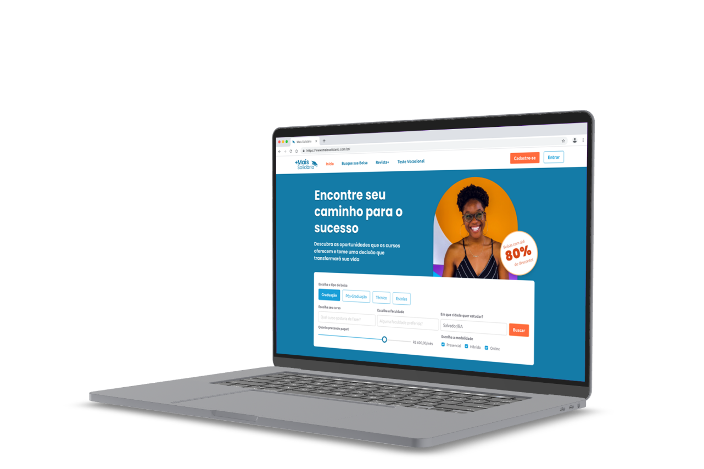
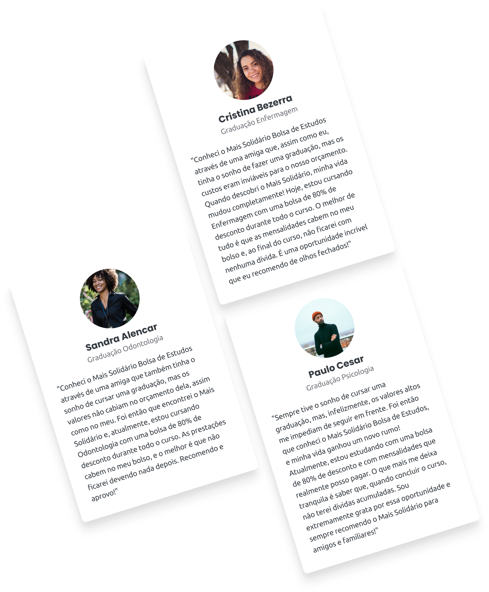
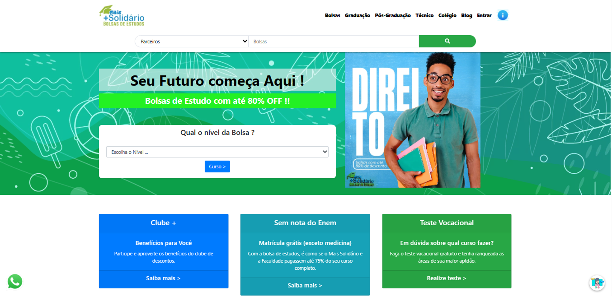
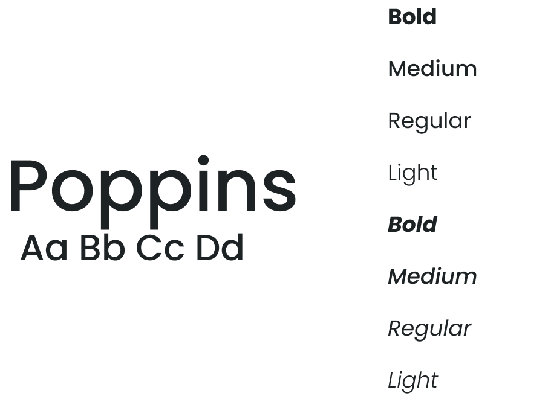
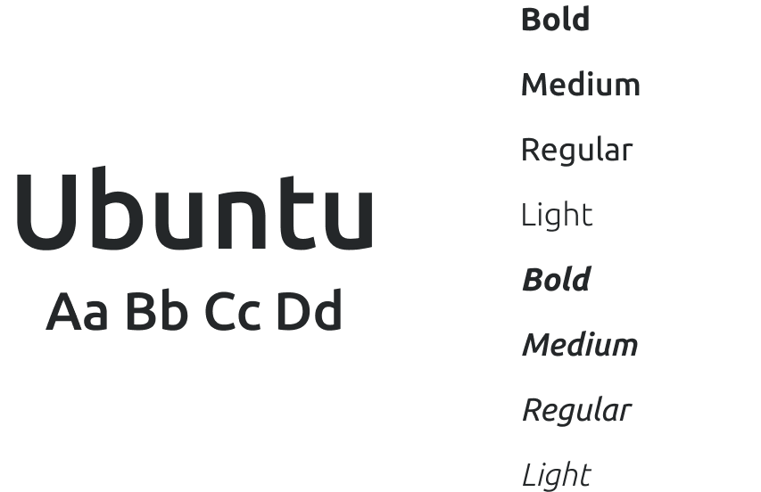
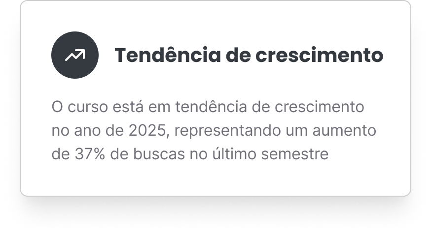
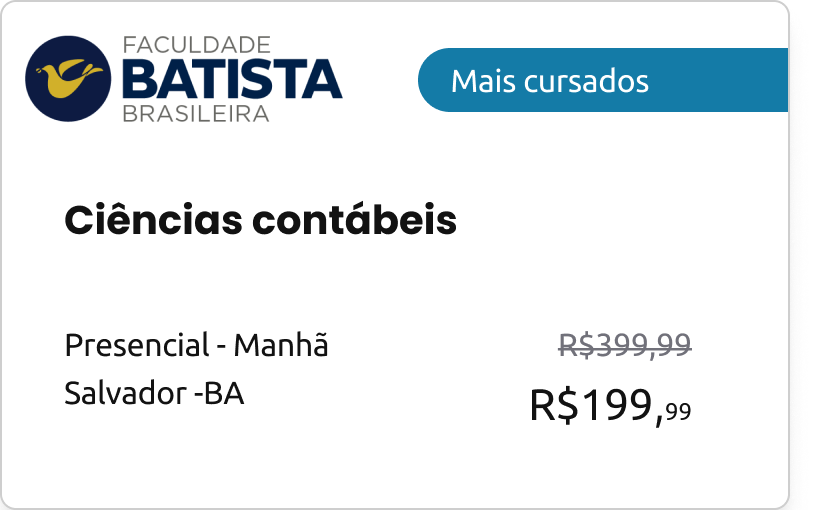
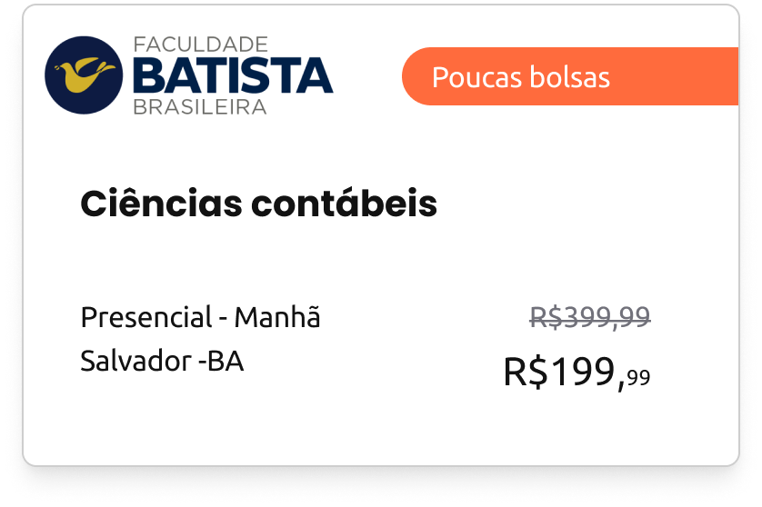
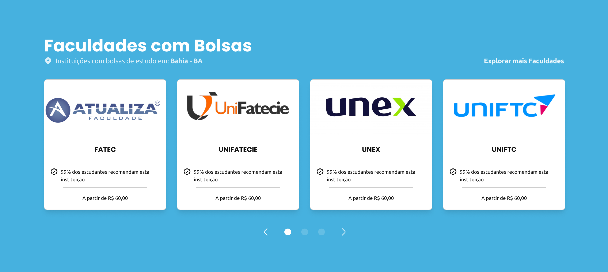

// CASE STUDY — MAIS SOLIDÁRIO
MAIS
SOLIDÁRIO
Simplificando a candidatura a bolsas de estudo para estudantes de baixa renda.
5 meses
UX Research
Lead Product Designer
UI Design Support

// IMPACTO EM NÚMEROS
40%
FINALIZAÇÃO DA INSCRIÇÃO
-35%
TEMPO DE BUSCA
WCAG
CONFORMIDADE EM ACESSIBILIDADE
// 01 — O PROBLEMA
NAVEGAÇÃO CONFUSA E FALTA DE CONFIANÇA
O site antigo apresentava problemas crônicos de arquitetura de informação, tornando a busca por bolsas um processo frustrante. A falta de hierarquia visual e design datado também geravam desconfiança nos usuários sobre a legitimidade da plataforma.
// 02 — A SOLUÇÃO
BUSCA GUIADA E PROVA SOCIAL
Redesenhamos a experiência focando em uma busca guiada por intenção do usuário (intent-guided search), simplificando os formulários e incorporando elementos de prova social através de cards de tendências e cursos mais buscados para aumentar a credibilidade e facilitar a tomada de decisão.
// 03 — O PROCESSO
Metodologia CSD
Utilizamos a metodologia Matriz CSD (Certezas, Suposições e Dúvidas) para alinhar as expectativas em reuniões com stakeholders. Complementamos com pesquisa desk sobre o comportamento de estudantes.
Perguntas Norteadoras
- Como os usuários avaliam a credibilidade de um programa de bolsas?
- Quais são os principais pontos de atrito no preenchimento de formulários longos?


// A PLATAFORMA ANTIGA
A Mudança na Tela
Refizemos a página do zero, estabelecendo uma hierarquia de informações mais clara, com uma barra de busca em destaque e menos cliques para o resultado final.
Filtros de busca direcionados
Estudantes agora buscam por curso, cidade ou modalidade em uma interface simplificada, sem sobrecarregar com opções irrelevantes.
Prova social em destaque
Depoimentos de bolsistas formados e logos de universidades parceiras visíveis logo na primeira dobra, reforçando credibilidade.
// 05 — IDENTIDADE
Cores & Identidade
As cores principais combinam a seriedade do azul com a energia do laranja, criando uma atmosfera que transmite confiança e vitalidade.
RGB: 24, 158, 215
HEX: #1B8C78
Azul Celestial
Escolhido por sua associação com confiança, segurança e estabilidade. Essa cor transmite seriedade e reforça a credibilidade da plataforma, garantindo que quem acessa tenha a sensação de segurança ao navegar e confiar nos serviços do Mais Solidário.
RGB: 107, 202, 145
HEX: #6BCA91
Verde Esmeralda
Associado à esperança, crescimento e sucesso. O verde simboliza o impacto positivo que o Mais Solidário proporciona, ajudando usuários a visualizarem a realização de seus sonhos acadêmicos e profissionais.
RGB: 255, 107, 61
HEX: #FF6B3D
Laranja Giz de Cera
Representa dinamismo, criatividade e acessibilidade. Essa cor foi incluída para criar pontos de destaque na interface, guiando os usuários de forma visual e estimulando ações como a inscrição ou a navegação entre as bolsas disponíveis.
Tipografia


Variações de Logotipo
Favicon e Ícone de Aplicativo
Assinatura de Marca Vertical
Assinatura de Marca Principal
// 06 — COMPONENTES
Cards
Card Empregabilidade
Seção de cursos com alta taxa de empregabilidade no mercado, com selo de garantia e percentual histórico de contratação de ex-alunos.

Card Mais Buscados
Em destaque na home, este componente gera prova social ao listar os cursos mais populares da semana com indicators de vagas restantes.


Faculdades Parceiras

// 07 — DADOS E RESULTADOS